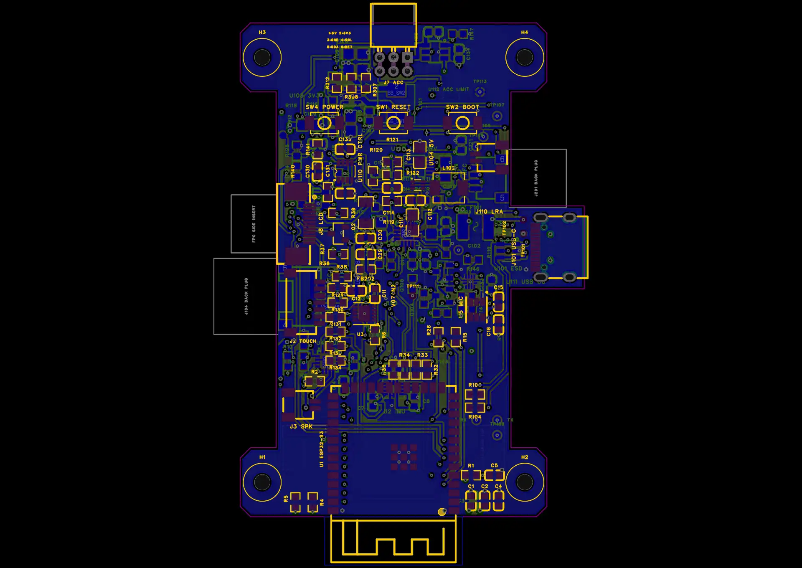

器灵 · PCB · 2026-10-25V074N2：四个凸耳与上下板边齐平
已同步当前嘉立创正式工程，主板丝印为 V074N2。相对上一临时方案，H1/H2 下移5 mm、H3/H4 上移1.5 mm；板长仍为71.5 mm，天线继续伸出板外。
双板 DRC 0 · 未连接 0 · 导出与原生回读一致
孔距 38 × 61.5 mm；4 × Ø2.2 mm 非金属化孔。孔壁至板边约2.1 mm。Ø5.5 mm螺丝头包络距最近器件C5约0.60 mm，无重叠。
| 孔位 | 工程坐标 / mm | 孔径 | 孔壁距板边 |
|---|
| H1 | -19, 85 | 2.2 mm | 2.10 mm |
| H2 | 19, 85 | 2.2 mm | 2.10 mm |
| H3 | -19, 146.5 | 2.2 mm | 2.10 mm |
| H4 | 19, 146.5 | 2.2 mm | 2.10 mm |
嘉立创原生预览

预览来自本次保存的嘉立创原生工程。保存与检查
主板129件457焊盘、适配板16件65焊盘，全部522个器件焊盘网络与原理图一致。器件、手工走线、过孔和叠层保持；更新板框、安装孔及其丝印并重建覆铜。GND内层连续，孔周与天线禁铜检查通过。
当前嘉立创项目仍为 Spirit_V074N_Manual_Routed_Final_20261025，以 V074N2 丝印和上下齐平的四凸耳辨认。
嘉立创原生工程 · 修改前临时四凸耳版 · 原正式手工布线版 · 检查数据
外壳配套边界
继续使用M2尼龙螺丝与塑料支柱。旧STL的四根安装柱须同步到新孔距；本次没有修改STL，旧壳体不能直接按原孔位安装。J7封装没有与凸耳重叠，但实际壳体、对接导向、线束和受力仍需验证。
实屏针序、USB阻抗、温升和无线性能等样机验证项继续保留。未下单。